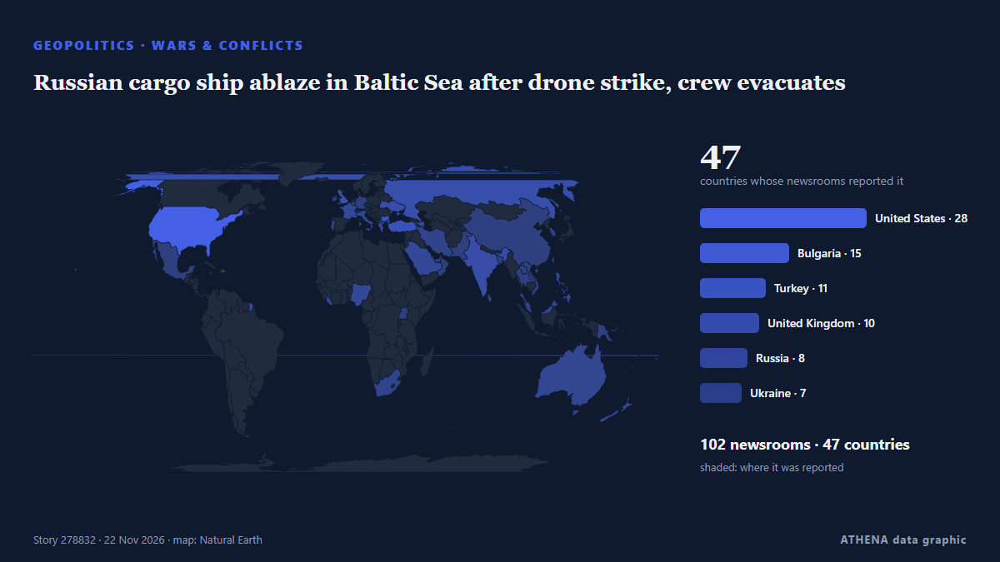

Géopolitique, politique et sécurité
SponsoriséPrésenté par  Cybernetics and Artificial Intelligence Lab Welcome to the Cybernetics and Artificial Intelligence Laboratory, established at the Department of Business Administration of the National and Kapodistrian University of Athens. The lab is headed by Professor Dimitrios Thomakos. The lab aims to do research that can be published in top venues. Our research uses tools and methods of Artificial Intelligence, and lies in the following areas: - Forecasting - Decision making - Cyber security - Finance We are always looking forward to collaborating with exceptional students!
Cybernetics and Artificial Intelligence Lab Welcome to the Cybernetics and Artificial Intelligence Laboratory, established at the Department of Business Administration of the National and Kapodistrian University of Athens. The lab is headed by Professor Dimitrios Thomakos. The lab aims to do research that can be published in top venues. Our research uses tools and methods of Artificial Intelligence, and lies in the following areas: - Forecasting - Decision making - Cyber security - Finance We are always looking forward to collaborating with exceptional students!
Les titres sont affichés en anglais, tels que publiés.

Guerres et conflitsRussian cargo ship ablaze in Baltic Sea after drone strike, crew evacuates
The 16-member crew of the Sparta II evacuated onto lifeboats, then to a nearby Russian ship, and is on its way back to Russia. de The Business Standard (Bangladesh) (working feed)
| 9 nov. | 317 |
|---|---|
| 10 nov. | 287 |
| 11 nov. | 261 |
| 12 nov. | 265 |
| 13 nov. | 223 |
| 14 nov. | 180 |
| 15 nov. | 198 |
| 16 nov. | 273 |
| 17 nov. | 258 |
| 18 nov. | 244 |
| 19 nov. | 255 |
| 20 nov. | 204 |
| 21 nov. | 105 |
| 22 nov. | 5 |
Saudi-Led Coalition Says Downed 3 Houthi Missiles Headed For Riyadh
The coalition said that air defences intercepted and destroyed (3) ballistic missiles launched by the terrorist Houthi militia toward Riyadh. de NDTV World
Iraqi forces strike compromise with powerful pro-Iran militia, security officials say
BAGHDAD, Nov 19 - Iraq has reached a compromise with the powerful Iran-backed militia Kataib Hezbollah, three senior security officials said, after Prime Minister Ali al-Zaidi readied security forces… de The Straits Times
Trump defends Putin after trilateral with Xi
President Trump, China's Xi Jinping and Russia's Vladimir Putin appeared to make little progress in their trilateral meeting in Shenzhen, China. de CBS News (World)
South Africa hit back against Ireland in thrilling Dublin test
Government needs to be honest with us about the threats we face. de Irish Independent
Denmark pushes EU to tighten travel curbs on Russians after foiled plot
Denmark has urged EU members to take action against Moscow after saying it foiled an alleged Russian intelligence plan to assassinate a US-Ukrainian rapper. de The New Arab
Araqchi says Iran wants diplomacy to end war; Trump says terms unacceptable
Nov 20 - Iran's Foreign Minister Abbas Araqchi said Tehran still hoped diplomacy could end its war with the United States, while US President Donald Trump said Iran wanted a deal but one that was not… de The Straits Times
With US midterms underway, courts rebuff Trump's pressure on state election officials
Nov 3 - In the hours before polls opened for the US midterm elections on Tuesday, federal judges issued a series of rulings restricting the Trump administration's unprecedented efforts to pressure… de The Straits Times
Zelenskyy says NATO membership for Ukraine remains under discussion and would benefit both
Ukrainian President Zelenskyy said Ukraine’s NATO membership is being discussed with France and the US as the clearest security guarantee. de Ukrainska Pravda (English)
Denmark expels Russian diplomat over attempt to kill Ukrainian rapper
Denmark has decided to expel a Russian diplomat after suspecting Russia’s involvement in an attempted assassination of a Ukrainian rapper. de Arab News
Iraqi security forces deploy in Iran-backed militia stronghold
By Maher Nazeh, Muayad Hameed and Eman Abouhassira JURF AL-SAKHAR, Iraq, DUBAI, Nov 20 (Reuters) - Iraqi security forces deployed inJurf al-Sakhar, a stronghold of the Kataib Hezbollaharmed group, on… de Al-Monitor
South Korean president reiterates US$75,000 reward for reporting college exam cheating
SEOUL: South Korean President Lee Jae Myung reiterated on Saturday that the government would offer a reward of 100 million won (US$75,000) to anyone reporting cases of cheating in this week’s college… de New Straits Times
Poland condemns Russian ‘provocation’ after 3 airspace violations
The incursions happened as Poland was set to hold military exercises for the 'Coalition of the Willing', a group of Ukraine's allies, on Friday. de Free Malaysia Today
Yemen's Houthis threaten to strike Saudi Red Sea ports
Yemen’s Houthis threatened on Friday to attack Saudi Arabia’s Red Sea ports if Saudi-led coalition forces struck the strategic Red Sea port of Hodeidah. de Business Recorder
UK and EU strike ‘landmark’ deal to rebuild ties after Brexit
🇬🇧🇪🇺 A fresh start after #Brexit? The #UK and #EU have agreed on a landmark #deal to rebuild ties, following a summit in Brussels this Friday. de France 24 English
Crime Costs Brazil US$74B as Lula Waits
Lula says he will name ministers on his own timetable, while a new study puts the 2025 cost of crime in Brazil at about US$74 billion, or 3.5% of GDP. de The Rio Times
Netanyahu associates acknowledge role in setting off election day arrests
Prime Minister Benjamin Netanyahu of Israel at the country’s Parliament in Jerusalem on Tuesday. de The San Juan Daily Star
At Least 9 Killed In Russian Attacks On Ukraine, Kyiv Bridges Damaged
At least nine people were killed and 28 injured on November 20 in an overnight Russian drone and ballistic missile attack on Ukraine. de RFE/RL (English)
Trump pushes decision on new Iran strikes into next year: ‘We’ve got time’
Trump had previously suggested Iran would be more willing to make a deal after the US midterms, which Republicans lost. de The Jerusalem Post
Russia Rejects NATO-Style Security Guarantees for Ukraine
Russia has rejected proposals for NATO-style security guarantees for Ukraine, calling any arrangements resembling the country’s membership in the alliance unacceptable. de Kyiv Post
Trump says Putin ‘expressed his desire’ for end of Ukraine war
US President Donald Trump reported that Russian President Vladimir Putin expressed a desire for a diplomatic end to the Ukraine war during their recent meeting. de Arab News
Trump says he, Russia’s Putin had ‘very good’ talks on Ukraine
Trump wants a deal before he discusses security guarantees for Ukraine. de The Straits Times
Estonia to close border with Russia for at least six months
The decision is a response to Russia’s ongoing hostile actions against Estonia. de The Straits Times
Putin says Russia invited Europeans to Moscow to clarify position on Ukraine talks
MOSCOW, Nov 19 - Russian President Vladimir Putin said on Thursday that Russia had proposed that European envoys come to Moscow to clarify their position on Ukraine peace negotiations before the… de The Straits Times
Trump, Xi and Putin release ‘peace declaration’ from unprecedented summit
By Jarrett Renshaw and Trevor Hunnicutt SHENZHEN, China, Nov 19 (Reuters) - Chinese President Xi Jinping and his US and Russian counterparts Donald Trump and Vladimir Putin agreed on a symbolic… de Al-Monitor
US strikes IRGC missile launch site on Iran's Qeshm Island
The Islamic Revolutionary Guard Corps (IRGC) of Iran announced the downing of a US MQ-1 reconnaissance drone in the area of Qeshm island in southern Iran, Tasnim reports. de NEWS.am (English)
Denmark condemns damage to Austrian, Dutch embassies in Kyiv
Foreign minister reaffirms Copenhagen's support for Ukraine following Russian strikes on Ukrainian capital. de Anadolu Agency (English)
Haiti: Salvador’s Bukele publishes video of attack on gang leader’s house
Salvadoran President Nayib Bukele said Wednesday that his troops demolished the lavish home of a prominent gang leader in Haiti known as Jeff Gwo Lwa. de France 24 English
Marcos brings investment commitments, free trade deal from China trip
MANILA, Philippines — President Ferdinand Marcos Jr. is back in Manila on Friday evening following a three-day trip to Shenzhen, China, for the Asia-Pacific Economic Cooperation (Apec) Economic… de Philippine Daily Inquirer
Xi, Trump and Putin Agree to Increase Refined Oil Supply in Joint Declaration
Three leaders also pledge dialogue on nuclear risks, UN reform and respect for state sovereignty following trilateral summit in China. de News of Bahrain
Riyadh’s tallest skyscraper hit in Houthi strike
Riyadh’s tallest skyscraper, headquarters of the Saudi sovereign wealth fund, was struck on Thursday by a suspected Houthi missile in the latest blow in the Iran-backed Yemeni group’s war with the… de Daily Mirror
'We will not negotiate' — Putin addresses Ukraine's strikes on Crimean Bridge
The remarks marked the Russian president's first public reaction to the attacks on the bridge, which he described as having sustained "serious damage." de Kyiv Independent
Five positive outcomes for HK at Apec summit: Lee
Chief Executive John Lee on Thursday outlined five outcomes for the SAR at this year’s Apec meetings in Shenzhen. de RTHK English
Europe warns against Ukraine peace deal made over its head
European allies met in Berlin to support Ukraine and warned against any attempt to decide a peace over their heads, after President Donald Trump embraced Russia’s Vladimir Putin as a “friend” at a… de Cyprus Mail
Trump’s historic summit with Xi, Putin
President Trump held a historic trilateral summit with the leaders of China and Russia. de NBC News (World)